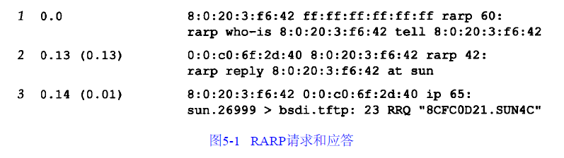
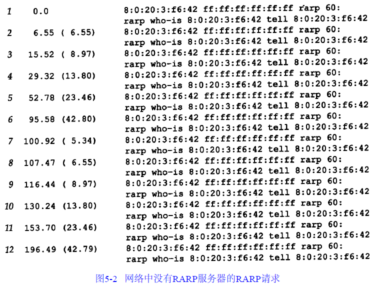

RARP逆地址解析协议
逆地址解析协议
具有本地磁盘的系统引导时，一般是从磁盘上的配置文件中读取IP地址。但是无盘机，如X终端或无盘工作站，则需要采用其他方法来获得IP地址
网络上的每个系统都具有唯一的硬件地址，它是由网络接口生产厂家配置的。无盘系统的RARP实现过程是从接口卡上读取唯一的硬件地址，然后发送一份RARP请求（一帧在网络上广播的数据），请求某个主机响应该无盘系统的IP地址（在RARP应答中）
在概念上这个过程是很简单的，但是实现起来常常比ARP要困难，RARP的正式规范是RFC 903
rarp分组格式
RARP分组的格式与ARP分组基本一致（见图4-3）。它们之间主要的差别是RARP请求或应答的帧类型代码为0x8035，而且RARP请求的操作代码为3，应答操作代码为4

和ARP类似，RARP请求以广播方式传送，而RARP应答一般是单播传送的
rarp举例
我们可以强制sun主机从网络上引导，而不是从本地磁盘引导。如果在主机bsdi上运行RARP服务程序和tcpdump命令，就可以得到如图5-1的输出：

第一行的RARP请求是广播方式，而第2行的RARP应答是单播方式。第2行的输出中atsun表示RARP应答包含主机sun的IP地址（140.252.13.33）在第3行中，可以看到，一旦sun收到IP地址，它就发送一个TFTP读请求（RRQ）给文件8CFC0D21.SUN4C（TFTP表示简单文件传送协议）。文件名中的8个十六进制数字表求主机sun的IP地址140.252.13.33。这个IP地址在RARP应答中返回，文件名的后缀SUN4C表示被引导系统的类型
- tcpdump在第3行中指出IP数据报的长度是65个字节，比起一个UDP数据报多了几个字节，因为我们运行tcpdump命令时带有-e参数，以查看硬件层的地址
- 第2行中的以太网数据帧长度比最小长度还要小（应该是60字节）。其原因是我们在发送该以太网数据帧的系统（bsdi）上运行tcpdump命令。应用程序rarpd写42字节到BSD分组过滤设备上（其中14字节为以太网数据帧的报头，剩下的28字节是RARP应答），这就是tcpdump收到的副本。但是以太网设备驱动程序要把这一短帧填充空白字符以达到最小传输长度（60）。如果我们在另一个系统上运行tcpdump命令，其长度将会是60
从这个例子可以看出，当无盘系统从RARP应答中收到它的IP地址后，它将发送TFTP请求来读取引导映象
无效rarp请求
当网络上没有RARP服务器时，其结果如图5-2所示。每个分组的目的地址都是以太网广播地址。在who-后面的以太网地址是目的硬件地址，跟在tell后面的以太网地址是发送端的硬件地址：

请注意重发的频度。第一次重发是在6.55秒以后，然后增加到42.80秒，然后又减到5.34秒和6.55秒，然后又回到42.79秒。这种不确定的情况一直继续下去。如果计算一下两次重发之间的时间间隔，我们发现存在一种双倍的关系：从5.34到6.55是1.21秒，从6.55到8.97是2.42秒，从8.97到13.80是4.83秒，一直这样继续下去。当时间间隔达到某个阈值时（大于42.80秒），它又重新置为5.34秒
超时间隔采用这样的递增方法比每次都采用相同值的方法要好
设计rarp服务器
提供一个ARP服务器很简单，通常是TCP/IP在内核中实现的一部分。由于内核知道IP地址和硬件地址，因此当它收到一个询问IP地址的ARP请求时，只需用相应的硬件地址来提供应答就可以了。然而RARP在概念上很简单，但是一个RARP服务器的设计与系统相关而且比较复杂
单个用户进程
RARP服务器的复杂性：
- 服务器一般要为多个主机（网络上所有的无盘系统）提供硬件地址到IP地址的映射。该映射包含在一个磁盘文件中。由于内核一般不读取和分析磁盘文件，因此RARP服务器的功能就由用户进程来提供，而不能作为内核的TCP/IP实现的一部分
- RARP请求是作为一个特殊类型的以太网数据帧来传送的（帧类型字段值为0x8035）。这说明RARP服务器必须能够发送和接收这种类型的以太网数据帧。不幸地是BSD分组过滤器、Sun的网络接口栓以及SVR4数据链路提供者接口都可用来接收这些数据帧。因为发送和接收这些数据帧与系统有关，所以RARP服务器的实现不得不与系统捆绑在一起
多个rarp服务器节点
RARP服务器实现的一个复杂因素是RARP请求是在硬件层上进行广播的，这意味着它们不经过路由器进行转发。为了让无盘系统在RARP服务器关机的状态下也能引导，通常在一个网络上要提供多个RARP服务器节点以提供冗余备份：
- 当服务器的数目增加时，网络流量也随之增加，因为每个服务器对每个RARP请求都要发送RARP应答。发送RARP请求的无盘系统一般采用最先收到的RARP应答（对于ARP，我们从来没有遇到这种情况，因为只有一台主机发送ARP应答）
- 另外可能发生的情况是每个RARP服务器同时应答，这样会增加以太网发生冲突的概率